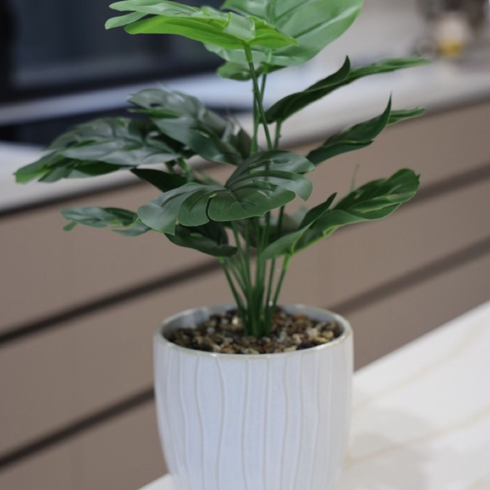

배경은 지금 시각의 하늘입니다. 해가 뜨고, 호를 그리며 지나가고, 지고 나면 달과 별이 올라옵니다. 그 위에 반투명한 유리 카드가 떠 있고, 누르면 밝아지며 파문이 번집니다.
해가 뜨면 화면이 실제로 환해지고, 글씨는 검게 뒤집힙니다. 지금 해야 할 하나를 가장 크게 보여줍니다.
누르는 순간 유리가 밝아지고, 손끝에서 파문이 번지고, 체크가 그려지며 글자가 바뀝니다.
무엇을 찍었는지 앱이 먼저 알아봅니다. 종류를 고를 필요가 없습니다.
사진 한 장으로 영양을 읽고, 오늘 먹은 것에 맞춰 다음 끼니를 제안합니다.

겉흙이 마르면 한 번. 요즘 계절엔 7~10일에 한 번이면 충분해요.
직사광선은 피하고 밝은 그늘에 두세요.
잎과 줄기에 독성이 있어요. 반려동물이 있다면 닿지 않는 곳에.
앱 기능이 아닌 사진은 AI가 읽고 알려줍니다. 식물, 물건, 라벨 무엇이든.
한 주의 변화를 문장 하나와 선 하나로 보여줍니다.
언제든 쉬운 화면으로 바꿀 수 있습니다. 글자 크기와 움직임도 조절합니다.
사진은 시안용 예시 이미지입니다 (Wikimedia Commons). 개발 중인 화면이며 최종과 다를 수 있습니다.